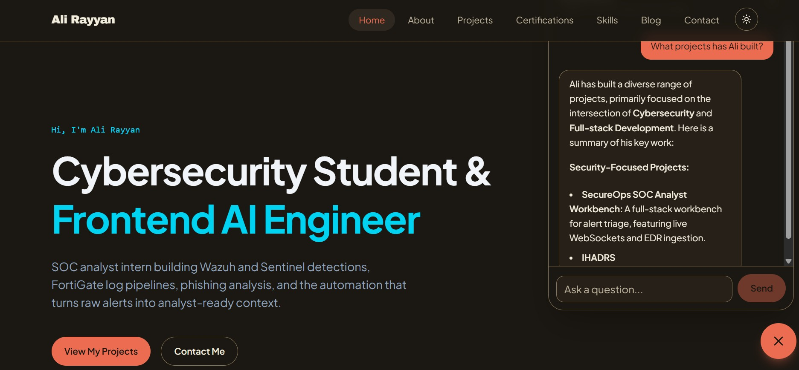

Frontend AI engineering internship · 2026
FlyRank portfolio CMS
A full-stack portfolio with content management and a streaming AI assistant. I built CRUD workflows, authentication, media uploads, and tools that let the assistant retrieve project information.
Engineering focusNext.js, TypeScript, Prisma and PostgreSQL. Input validation, role-based access, stream recovery, and accessible component testing.
Explore code and documentation